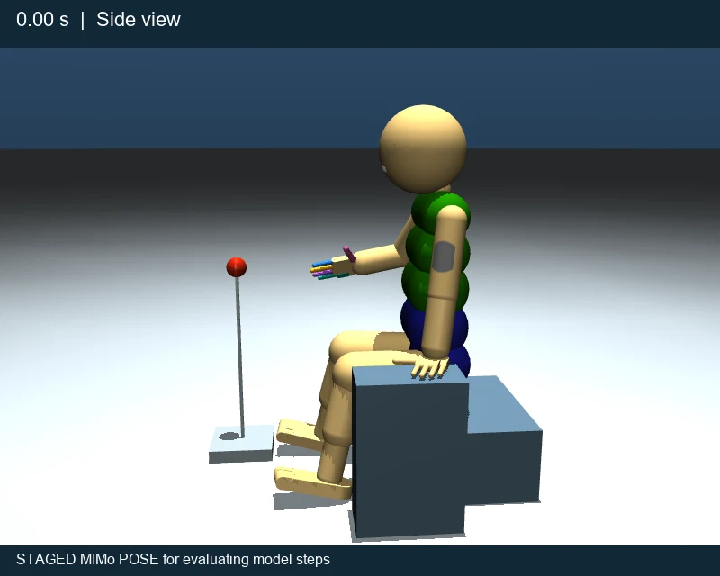
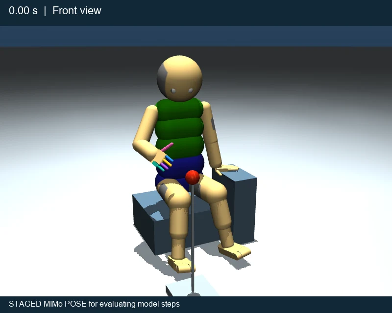
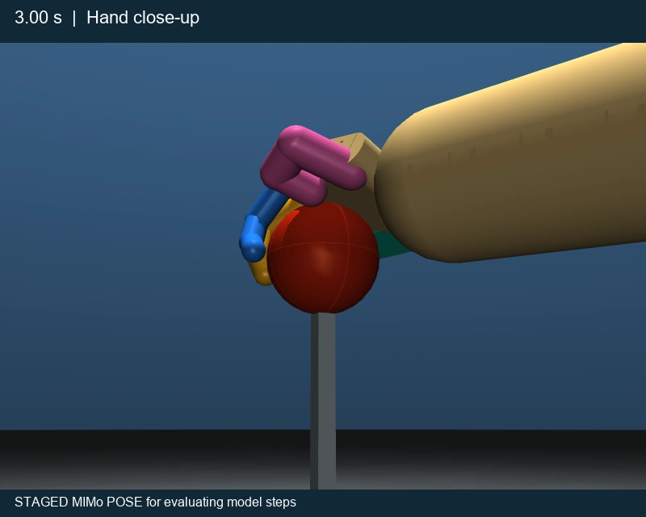
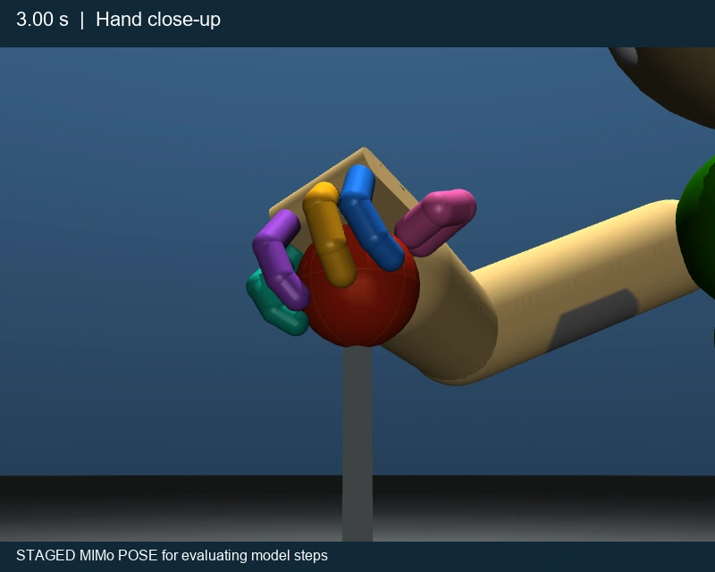

Start with a body
A simulated body and its connection to the model are already in the package. Spend your effort on learning, perception and control instead of first building a robot platform.
We are going to build conscious AI. A mind that learns through a body, develops a sense of self, and comes to understand its world through experience.
That is the purpose of Conscious Beings, the research initiative at Mind Machine Learning. Our model, UEMA, puts perception, bodily wellness, imagination and intention into one architecture. MIMo gives it a simulated body. The work ahead is to make that mind grow.
It can pick up a cup. Predict a moving object. Follow a thousand instructions. We can measure every success and still have no answer to a simple question: does anything feel like anything to it?
That is the zombie problem: intelligent behavior with the question of inner experience left untouched. A higher task score does not settle it. Neither does a convincing conversation.
While others debate whether an LLM is conscious, we are building a mind around a body and a developing self.
Our position: this is a far more promising route to consciousness than language performance alone. A body gives actions consequences for the learner itself. Self perception connects those consequences with its own condition. Memory lets that history shape what it expects and intends next. Those connections are the foundation we are building on.
UEMA stands for Unified Embodied Mind Architecture. Its starting point is a body with a condition of its own. Movement changes what that body senses. Contact can help or disrupt it. Experience teaches the model what its actions do, both to the world and to itself.
Wellness means how well the body can sense, act and keep working. Homeostasis means maintaining those functions. In UEMA, these belong inside the account of self that guides intention. The aim is a being that learns what matters through living with the consequences of its actions.
The supporting hand, trunk, reaching arm and fingers must work together. This motion study uses posed MIMo renderings to show the coordination we want the model to learn. Move the slider to inspect any moment from two camera angles.
STAGED MIMo POSE for evaluating model steps


0.00–0.50 s · Begin the reach. The gaze stays on the ball. The reaching shoulder turns, the elbow opens and the fingers spread.
The research challenge: learn how these movements fit together, then adapt when the ball, the body or the surroundings change. A learned prediction must help the next movement respond to what actually happened.


Illustrated duration: 3 seconds. Renderings and timing from the continuous-movement study, using its corrected supporting-hand frames.
Read the scene, touch and body position. Learn which patterns belong together.
A learned forward model predicts the effects of possible commands.
Connect predicted outcomes with bodily condition and the ability to sense and act.
Compare possible outcomes and refine the commands that could bring one about.
Move the body. Read the contact sensors. Use the difference from the prediction to learn.
If you want to help build a mind, you need somewhere to touch the machinery. You need its body, its learning code, its predictions and its history. You need room to change an idea and see what happens.
UEMA_Research brings the model, MIMo and the research tools together. That means a contribution can reach from a line of code to a change in how a body learns. The package uses MIMo directly; it does not require the separate Unreal Engine avatar project.
A simulated body and its connection to the model are already in the package. Spend your effort on learning, perception and control instead of first building a robot platform.
Study how a prediction becomes a command. Work on the mechanism itself. A dashboard result becomes something you can trace, explain and improve.
Saved model and world state give experiments a common starting point. Ask what your change caused without confusing it with a different past.
A grasp brings together robotics, learning and perception. A body learning its own limits brings in neuroscience and the study of self. Here those questions meet in code.
Does touch teach something vision misses? Can a model learn to recover its balance? Does a learned distinction survive a new situation? An answer can change the design.
Produce experiments others can inspect, explanations they can follow and changes they can reproduce. Your contribution becomes part of a larger attempt to understand a mind.
Follow one movement from the camera and touch readings to the predicted outcome and the resulting contact. Then ask whether an extra piece of sensory information helps the next prediction.
An LLM can help you read the code, write a check and understand a result. The source and the experiment give you a way to check its advice. You can begin with one clear question and grow into harder ones.
How should a model learn a continuous movement? How does it keep useful abilities while acquiring new ones? What distinguishes learning about the world from learning about itself?
These are substantial research problems. UEMA offers a connected system in which a theory can change a prediction, a movement and the next learning experience.
Does touch help the model distinguish a secure grip from a slip?
Compare access to touch information from the same saved starting state.
Measure predictions, contact and whether the object stays in the hand across repeated trials.
Show what changed and why. Use the finding to improve the model or the theory.
UEMA model code, the MIMo simulation and bridge, saved learning and world state, dashboards, an architecture explainer and a movement viewer. The setup path includes cloning the repository, installing the environment and retrieving the model weights. Weights are the numbers a network learns during training. The weights are public under the license; the setup command states your agreement to it. UEMA_Research
An October 22 setup check completed 100 model steps on an 8 GB RTX 4070 laptop. It took 376 seconds including loading, used a peak of 4,287 MB of graphics memory, and added about 30 GB of system committed memory, which uses RAM and page-file backing. That is a concrete tested setup for planning your equipment needs.
Two objects may look alike, yet one slips and the other stays in the hand. The difference becomes useful when the model connects what it sees, what it feels and what happens when it moves.
UEMA's perception-space work describes this growth. A perception space is the range of readings and learned patterns a system can represent. Version 4 separates four layers so we can ask exactly what changed during learning.
A camera records image values. Touch records contact. Body readings record position.
Bodily condition can change the precision of those readings and the information available.
Training changes how sensory readings become compact internal representations.
Distinguishing a slip from a secure grip can support a better prediction and movement.
Each useful ability opens more opportunities to learn. A better reach brings new objects into contact. New contact teaches new distinctions. Those distinctions support new abilities. This relationship between perception and action is central to the kind of development we want to build.
Frontier world models are powerful tools. They predict scenes, plan actions and control robots. Their published demonstrations also reveal the gap we are choosing to work on: doing a task well is not an explanation of a developing self or felt experience.
Our challenge is direct. If a model's success is defined by matching a goal image, following an instruction or producing a convincing simulation, where in that result is an account of what matters to the model itself?
RoboJEPA predicts the effects of robot commands and plans movement sequences toward a goal image. It is a strong approach to learning how an action changes a scene.
The gap: reaching a supplied visual goal measures task success. It does not explain how the model develops its own bodily concerns or why an outcome would matter to its continuing self.
RoboJEPA paper, October 7, 2026Cosmos connects text, images, video, audio and actions for physical prediction, reasoning and simulation. It can represent rich changes in a world.
The gap: modeling what happens in a world does not by itself explain the experience of a being within it. UEMA makes that being's body and developing self the center of the inquiry.
Cosmos 3 researchGR00T turns images, language and robot-state readings into actions. Its tools adapt an already-trained model using robot demonstrations.
The gap: skill at carrying out a task does not tell us how needs and intentions develop through a body's own history. That development is a central UEMA research target.
GR00T development guideAMI emphasizes world models, memory and planning. Ineffable emphasizes learning knowledge and skills from experience. Both address important parts of intelligence.
The challenge we add: make the route to conscious beings an explicit research program. Connect perception, bodily condition, learned self and intention, then investigate that connection directly.
AMI Labs · IneffableUEMA puts the question of being someone inside the design brief.
For a researcher who wants to work on consciousness, that changes the project. You can ask how the body shapes perception, how experience shapes self, and how self shapes intention within one architecture. Those questions guide what we build and what we measure.
This is a comparison of research aims and the questions answered by published systems, current to October 28, 2026. RoboJEPA and NVIDIA publish code and models. AMI is a separate lab from Meta and states a commitment to open research. UEMA's invitation rests on its architecture and purpose.
LeCun's broader autonomous-intelligence proposal includes intrinsic costs such as pain and hunger, learned future costs and planning. The shared interest makes the comparison more substantive: the research question is how particular connections among self, perception and action work. Dawid and LeCun, section 2.3
Hunger can make food absorb your attention. Pain can make a small movement matter enormously. Relief changes what you are ready to do next. Your body is part of how the world acquires meaning for you.
Neuroscientist Anil Seth and colleagues connect the experienced self with the brain's predictions about the body and its regulation. Interoception means sensing the body's internal condition. Their work gives a clear reason to study bodily prediction and regulation when asking how a sense of self arises. Seth and Friston, 2016
UEMA links bodily condition with perception and action. The scientific bet is that learning what happens to this body, and how this body can act, belongs at the foundation of a developing self.
Change a bodily condition. Follow its effect through perception, prediction and intention. Test whether learned self information changes adaptation. This turns an idea about mind into a concrete program of experiments.
Self perception is a neural network that learns a description of bodily condition. A second network uses that description and a timed command to predict what happens to the body next.
Take body readings and recent history, including skin stimulation and the ability to move.
Self perception turns those readings into a learned description with memory of recent changes.
Use that description and the command's timing to predict skin sensing quality, the skin's exposure to pressure, and available motor force.
The difference teaches both networks: self perception and body forecasting. Their learned weights, the numbers that store what a network has learned, change how they process the next experience.
Learning returns to steps 2 and 3. A separate report lets researchers inspect the predictions, errors and body readings.
Consciousness means that there is something it feels like to be a being. Our ambition is to build toward that from the inside: a body, perception, learned consequences, a continuing self and intentions shaped by experience.
You might arrive with a background in robotics, neuroscience or machine learning. You might arrive with strong programming skills and a question you cannot leave alone. You might be new, willing to learn, and ready to use today's tools to do careful work.
The common ground is the ambition: help build an artificial mind that develops through experience. Bring a skill, take on a question, and make a contribution someone else can build on.
Lead an experiment. Improve how the model predicts a movement. Help explain how bodily experience becomes knowledge of self. The project needs people who want to build this and are prepared to do the work.
If that is the work you want to do, follow Conscious Beings.
Visit Mind Machine Learning →UEMA_Research now carries the Mind Machine Learning Noncommercial License 1.0 (the file LICENSE in the repository). It permits use, changes and sharing for noncommercial purposes, including noncommercial research. It grants no patent license. Third-party components keep their own licenses; MIMo keeps its MIT License.
The license was added to the repository on October 29, 2026, and the code and weights repositories were made public on October 30, 2026. For other uses, contact Mind Machine Learning.
Glonet will be the place to register and accept the contributor agreement. That agreement is separate from the license for using UEMA. It will give Mind Machine Learning permission to include your contributions and license them commercially.
Register on Glonet and link your GitHub account, so your contributions can be matched to your agreement.
Read the contributor agreement, accept it and receive a copy. You will be asked again if the agreement changes.
Work in your own copy of the code. Send a pull request, which asks us to merge your changes into UEMA_Research.
The agreement check will happen before merging. GitHub will check that every commit author has signed before allowing a contribution into the main repository. It will not control commits in your own copy. Signup and this merge check are planned; Mind Machine Learning will announce when they are ready.
The UEMA_Research repository contains the model and MIMo, with tools and saved state, and is public. The saved weights are in a public Hugging Face repository; python fetch_weights.py --accept-license downloads them and states your agreement to the license. Signing a contributor agreement is a separate step, for people who want their changes merged; the participation announcement will explain it.
The planned agreement will cover the right to use and license contributions, contributor patent rights, ownership of the work and any employer or university rights. Contributors will identify any third-party code they include. The full agreement will be available to read before acceptance.